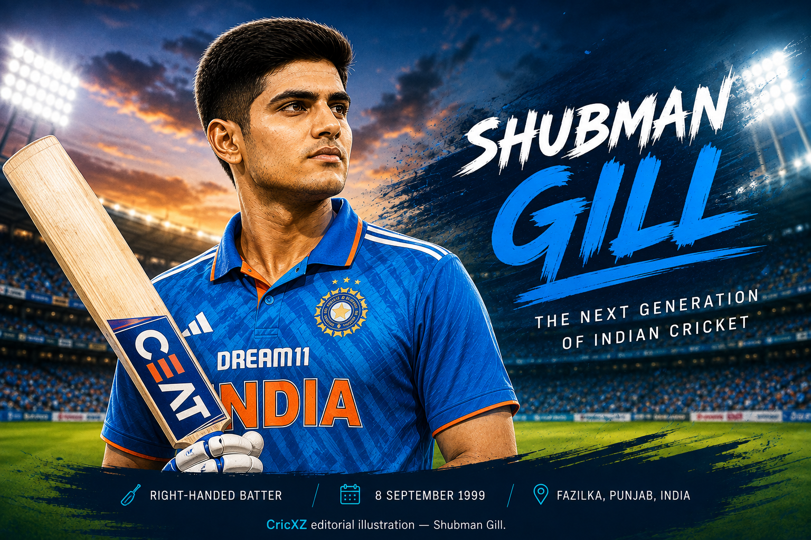

Test
- Matches
- 41
- Batting innings
- 75
- Not outs
- 6
- Runs
- 2,969
- Highest score
- 269
- Batting average
- 43.03
- Strike rate
- 61.85
- Hundreds
- 11
- Fifties
- 8
- Fours
- 333
- Sixes
- 47

Shubman Gill is an India international cricketer who plays as a top-order batter. He bats right-handed, bowls right-arm off-spin and made his international debut in 2019.
Statistics as of: 27 August 2026
Primary career statistics source: BCCI
26 December 2020
Against Australia at Melbourne Cricket Ground, Melbourne.
31 January 2019
Against New Zealand at Seddon Park, Hamilton.
3 January 2023
Against Sri Lanka at Wankhede Stadium, Mumbai.
As of 27 August 2026, Shubman Gill is India’s Test and ODI captain. He most recently led India to a 1–0 Test-series victory in Sri Lanka after the Colombo Test ended in a draw. Gill remains an active T20 international, although he was not selected for India’s 2026 T20 World Cup squad or the subsequent T20I series against Ireland and Zimbabwe.
Gill captained India in the two-Test tour of Sri Lanka, which India won 1–0. In the drawn second Test in Colombo, he scored 50 from 108 balls, with six fours and no sixes, in India’s only innings of 503/9 declared.
As of 27 August 2026, Gill is India’s ODI captain. This dated leadership status is separate from his stable identity as an international top-order batter.
Gill remains an active T20 international but was not selected for India’s 2026 T20 World Cup squad or the subsequent T20I series against Ireland and Zimbabwe.
Won the ICC Under-19 Cricket World Cup with India and was named Player of the Tournament after scoring 372 runs at an average of 124.
Became the youngest men’s ODI double-centurion after scoring 208 against New Zealand in January 2023.
Reached No. 1 in the ICC men’s ODI batting rankings in November 2023 and regained No. 1 in February 2025. These are historical ranking achievements, not a current ranking claim.
Won ICC Men’s Player of the Month for January 2023, September 2023 and February 2025.
Represented India at the 2023 ODI World Cup, where India finished runners-up.
Was a member of India’s ICC Champions Trophy-winning squad.
Scored 754 runs during India’s five-Test tour of England, his first series as Test captain.
Statistics as of: 27 August 2026. Test, ODI and T20I aggregate figures use the BCCI career-statistics baseline.